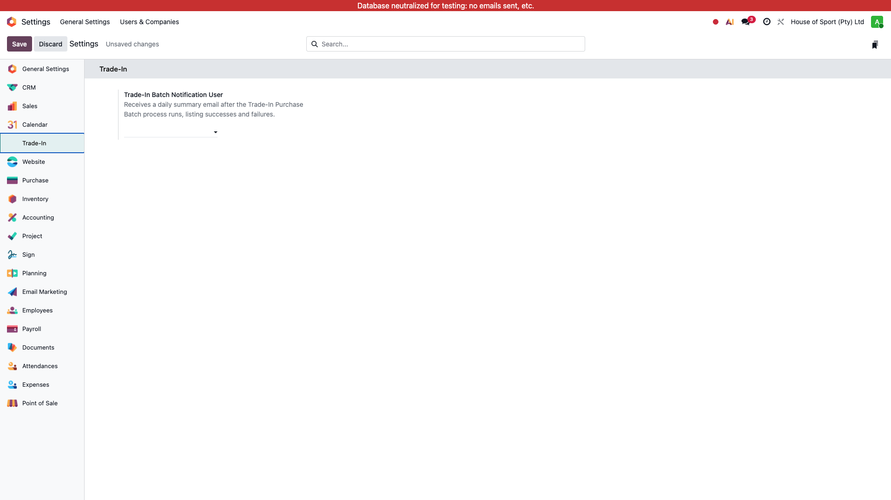
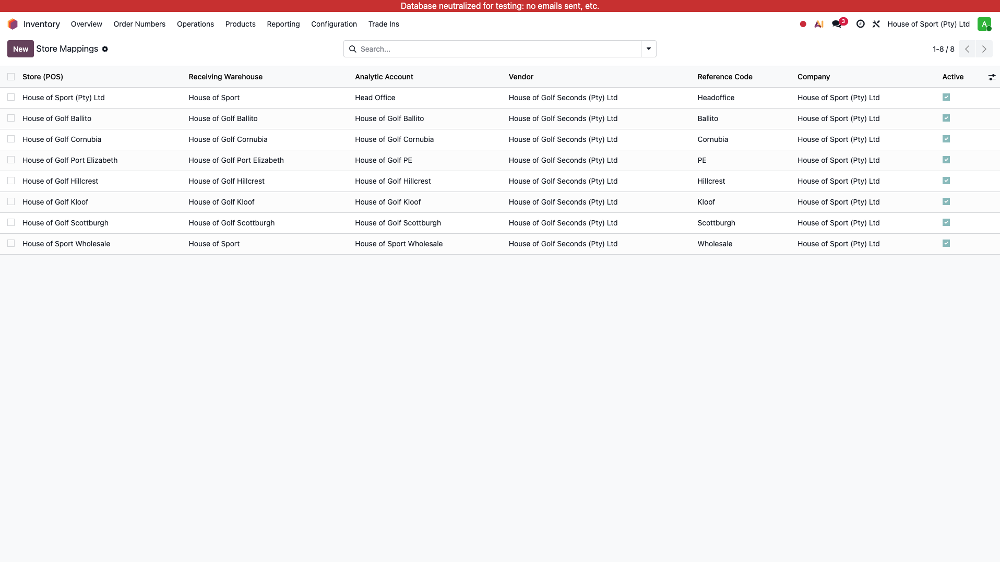
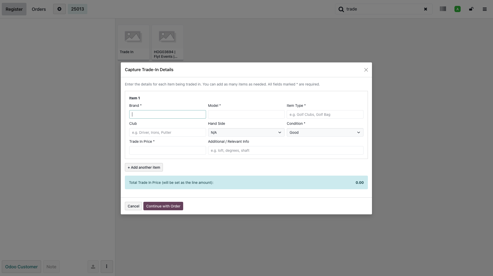
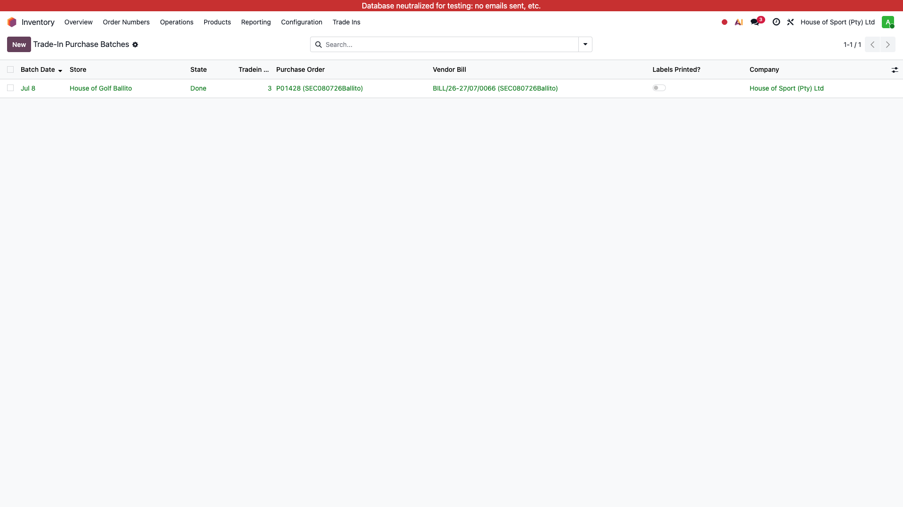

POS Trade-In Product Creation User Manual
When a cashier scans or clicks the "Trade In" product in the Point of Sale, this module opens a capture form, creates a new Preloved-category product for each item entered, and keeps a full audit trail. A separate daily automation then bundles each store's trade-ins into a Purchase Order, Receipt and Vendor Bill without manual intervention.
1. Introduction
Trade-ins are captured at the point of sale, not on the product form. Each captured item becomes a new sellable "Preloved Goods" product, linked back to an audit record that stores exactly what the cashier entered.
Main purpose
Force full capture of trade-in item details at POS and automatically create the resulting sellable product, with no raw trade-in data ever added to the product record itself.
Operational flow
Cashier captures item details at POS → product + audit record created automatically → staff member sets the selling price → daily automation purchases, receives and bills the item per store.
2. Configuration
Two areas need setup before this module is fully operational: the notification recipient, and the per-store mapping used by the purchase automation.

Integrations showing the Trade-In Batch Notification User field">
| Field | Purpose |
|---|---|
Trade-In Batch Notification User |
Set under Settings > General Settings > Integrations, alongside the other integration toggles. Receives a daily summary email after the Trade-In Purchase Batch runs, listing which stores succeeded and which failed. |
Inventory > Trade Ins > Configuration > Store Mappings: one row per store, mapping the POS store to its Receiving Warehouse, Analytic Account, Vendor and Reference Code. Picking a store auto-suggests the warehouse, analytic account and reference code from that store's existing POS configuration — these are editable before saving.
Example configuration
Store "House of Golf Port Elizabeth" → Reference Code auto-suggested as PORTELIZABETH,
used to build daily PO/Bill references such as SEC030726PORTELIZABETH (SEC + date + code).
No Store Config batch instead (see Section 8).
3. How It Works
Clicking or scanning the fixed "Trade In" trigger product opens a capture popup immediately, before the line is added to the order. Nothing about a trade-in is stored on the product itself — all raw data lives on a separate audit record.
| Captured field | Required? | Notes |
|---|---|---|
| Brand | Yes | |
| Model | Yes | |
| Item Type | Yes | E.g. Golf Clubs, Golf Bag. |
| Club | No | E.g. Driver, Fairway, Irons, Wedge, Putter. |
| Hand Side | No | Left / Right / N/A. |
| Additional / Relevant Info | No | Free text. |
| Trade In Price | Yes | Must be numeric and not negative. |
| Condition | Yes | New / Good / Well Used. |
Product name format
Preloved {Brand} {Item Type} | {Club} | {Model} {Additional Info} — optional
segments (Club, Additional Info) are dropped cleanly rather than leaving blank separators.
Example: Preloved Callaway Golf Clubs | Driver | Rogue ST Max.
Pricing at creation
The product's Cost is set to Trade In Price ÷ 1.15 (removing VAT). Selling Price is deliberately left at 0 — it is not decided at POS (see Section 6). Internal reference and barcode are generated automatically using the existing SKU/barcode generator logic already in use elsewhere.
4. Capturing a Trade-In at POS
The cashier's flow requires no backend access at all:

5. Failed Captures & Idempotency
Every trade-in submission carries a batch ID (the POS order UUID) and a per-line key. Resubmitting the same batch — for example after a network retry — can never create duplicate products or audit records; the second attempt simply returns the records already created the first time.
6. Setting the Selling Price
Selling Price is intentionally not captured at POS. An authorized staff member (Trade-In: Can Edit Product Title / Selling Price security group) sets it afterwards, either directly on the Trade-In record or on the product — both are kept in sync. Product Title is similarly editable after creation; no other captured field can be changed once a trade-in is saved.
7. Purchase Batch Automation
A daily (or on-demand) job sweeps up every currently un-batched trade-in per store and, for that store, creates a Purchase Order against the fixed trade-in vendor, confirms it, validates the receipt, and creates and posts the vendor bill — entirely automatically.

All-or-nothing per store, per run
The full PO → Receipt → Bill chain for one store runs inside a single database savepoint. If
any step fails, everything for that store rolls back cleanly and the batch is marked
Failed with the error recorded — nothing partially-created is left behind.
Retry action) — this simply
triggers a fresh run for that store, which naturally sweeps up the original items plus anything
captured since.
8. Batch States and Reasons
Each Purchase Batch record moves through the following states:
9. Best Practices
- Set up a Store Mapping row for every active POS store before trade-ins go live there.
- Set the Trade-In Batch Notification User so failures are actually seen daily.
- Set Selling Price promptly after creation — products are created at R0 selling price by design.
- Review Failed Captures regularly; these represent completed sales with no product created yet.
- Investigate and retry Failed / No Store Config batches rather than leaving them unresolved.
- Don't edit trade-in fields directly on the product beyond Title and Selling Price — other fields are locked by design.